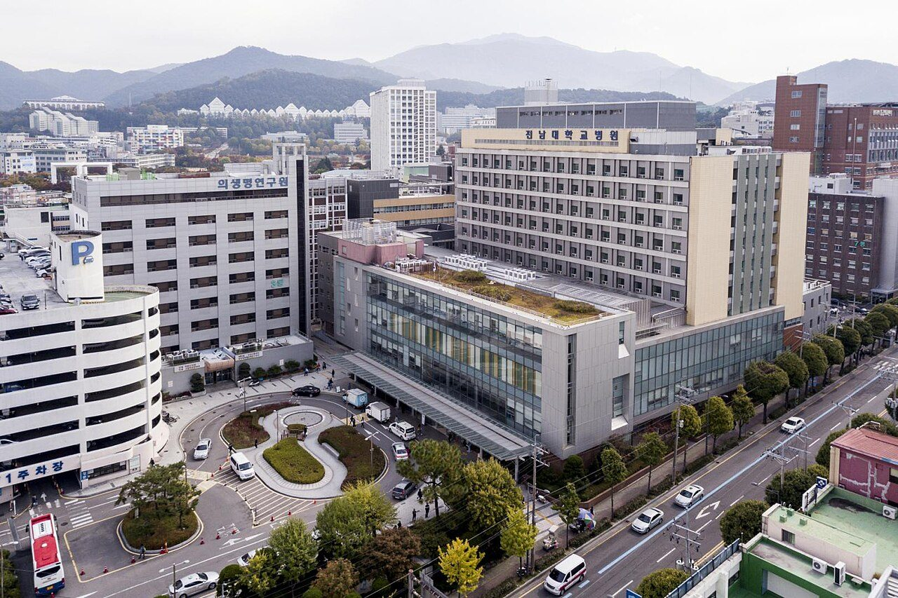
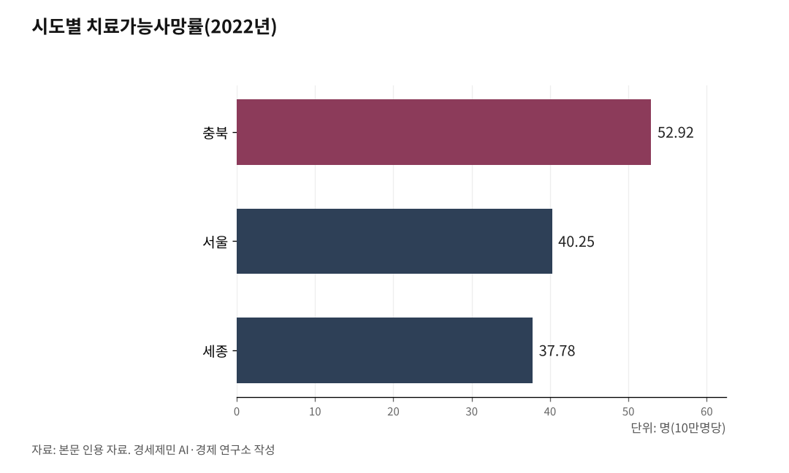

[한국경제 불편한 진실⑪] 의료 — 3분 진료가 떠받친 세계 최고 접근성, 그 청구서가 온다
1인당 외래진료 18회로 세계 최다, 진찰은 6분. 건강보험은 2026년 적자로 돌아서고, 의대 증원은 1년 만에 백지화됐다.

한국 의료는 싸고 빠르다. 감기에 걸리면 그날 동네 의원에서 진료받고 약을 탄다. 이 편리함이 오래 자랑이었다. 그런데 그 편리함을 떠받친 구조가 안에서부터 무너지고 있다.
1. 세계에서 가장 자주, 가장 짧게 진료받는 나라
국민 1인당 연간 외래진료 횟수는 18.0회다(2023년 기준, 치과 제외). 경제협력개발기구(OECD) 회원국 평균의 약 3배로 압도적 1위다.
대신 의사 한 명이 환자를 보는 시간은 평균 6.2분(2017년 기준)으로, OECD 평균 12.6분의 절반에 못 미친다. 활동 의사는 인구 1000명당 2.3명으로 OECD 평균 3.4명에 모자란다. 적은 의사가 많은 환자를 짧게 보는 박리다매가 한국 의료의 실제 얼굴이다.

2. 곳간이 비어간다
이 구조는 건강보험 재정이 떠받친다. 그 곳간이 바닥을 보인다. 국회예산정책처는 현행 제도가 유지되면 건강보험 재정이 2026년 적자로 돌아서고 누적 준비금이 2030년 소진된다고 봤다. 수입은 연평균 7.2% 느는데 지출은 8.9% 늘어, 2032년 누적 적자가 61조6000억원에 이른다는 계산이다. 정부 장기재정전망은 준비금 고갈 시점을 2033년으로 잡았다.
원인은 고령화다. 한국은 2024년 12월 65세 이상 인구가 전체의 20%를 넘는 초고령사회에 들어섰다. 노인의 1인당 진료비는 전체 평균의 3배를 웃돈다. 보험료를 내는 일하는 인구는 해마다 줄고, 진료비를 쓰는 인구는 는다. 연간 진료비 지출은 이미 100조원을 넘어섰다.
3. 응급실 앞에서 멈춘 구급차
숫자 뒤에는 더 불편한 현실이 있다. 2023년 3월 대구에서 건물에서 떨어진 17세 환자가 구급차를 타고 병원을 전전하다 이송 중 숨졌다. 신경외과 의료진이 없다는 이유로 병원들이 받지 못했다. 이 사건으로 응급실 의사 2명이 2026년 6월 불구속 송치됐다.
응급실 뺑뺑이, 소아과 오픈런은 이제 일상어가 됐다. 소아청소년과 전공의 10명 중 7명 이상이 서울로 몰리면서 지방 의료는 더 비었다. 정부는 달빛어린이병원을 93개소에서 2026년 120개소로, 권역응급의료센터를 44개에서 60개 안팎으로 늘린다.
4. 지방에서는 살릴 수 있는 사람이 죽는다
의료 격차는 통계에 죽음으로 찍힌다. 치료가능사망률이라는 지표가 있다. 제때 치료받았다면 막을 수 있었던 조기 사망을 인구 10만명당으로 잰 수치다. 2022년 기준 충북이 52.92명으로 가장 높고, 서울은 40.25명으로 세종(37.78명) 다음으로 낮다. 같은 병에 걸려도 어디 사느냐에 따라 살 확률이 달라진다는 뜻이다.
낳을 곳도 없다. 2024년 6월 말 기준 산부인과가 없는 시군구는 23곳으로, 전부 비수도권이다. 강원과 경북이 6곳씩, 경남이 4곳이다. 이 가운데 14곳은 5년 내내 출생아 수가 국내 하위 30위권에 머물렀다. 병원이 사라진 곳에서 아이도 사라진다.
5. 가격이 왜곡된 시장, 사명감의 착취
경제학은 일찍이 경고했다. 케네스 애로(Kenneth Arrow, 1972년 노벨경제학상을 받은 미국 경제학자)는 1963년 논문에서 의료는 정보의 불균형과 불확실성 때문에 시장에만 맡기면 실패하는 대표 영역이라고 지적했다.
한국은 거꾸로 갔다. 생명을 다루는 필수의료의 값(수가)은 건강보험이 낮게 묶어두고, 미용·성형 같은 비급여 진료는 시장에 풀어놨다. 의사가 어디로 갈지는 가격이 정한다. 응급실과 분만실을 지키는 일보다 피부 시술 개원이 더 벌리는 구조에서, 사명감만으로 빈자리를 메우라는 요구는 오래가지 못한다.
값이 거짓말을 하면 사람도 그 신호를 따라 움직인다. 전기요금이 그랬듯, 의료의 가격 왜곡도 결국 미래의 청구서로 돌아온다.
6. 1년 만에 돌아온 제자리
정부는 의사 부족을 메우려 했다. 2024년 5월 27년 만에 의대 정원을 3058명에서 4567명으로 1509명 늘렸다. 의료계는 전공의 사직과 의대생 수업 거부로 맞섰다. 결국 2026학년도 정원은 1년 만에 다시 3058명으로 되돌아갔다. 의대생 복귀율은 2025년 4월 25.9%에 그쳤다.
이재명 정부는 2027학년도부터 정원을 490명 늘리고, 2028학년도부터 613명, 2030학년도부터 813명을 단계적으로 늘리기로 했다(2026년 2월 발표). 늘어난 자리는 서울을 뺀 32개 의대의 지역의사전형으로 뽑는다. 갈등의 비용은 그 2년 동안 환자가 치렀다.
병원 문턱이 세계에서 가장 낮은 나라와, 급한 밤 응급실 문이 열리지 않는 나라. 둘은 같은 나라다.
세계에서 가장 자주 병원에 가는 나라가, 정작 급할 때 갈 병원을 찾지 못한다. 이 모순의 청구서를 누가 어떻게 나눠 낼지는 아직 정해지지 않았다.
※ 이 기사는 AI 프로그램 클로드를 활용해 작성했다.
참고문헌
· "국민 1인당 한해 외래진료 18회…OECD 평균의 3배", 헤럴드경제, 2025.4.1. https://biz.heraldcorp.com/article/10454834
· "의사 수는 꼴찌인데…외래 진료는 1등", 메디포뉴스. https://medifonews.com/mobile/article.html?no=151894
· "건강보험 재정, 이대로면 2026년 적자…'과잉 의료 관리할 전략 필요'", 경향신문, 2025.8.18. https://www.khan.co.kr/article/202508181700001
· "건보 재정 내년부터 적자 돌입…8년 후엔 60조 누적 적자", 더메디컬. https://www.themedical.kr/news/articleView.html?idxno=1903
· "지출액 100조 돌파…늙어가는 한국, 쪼그라드는 건보 곳간", 데일리팜. https://dailypharm.com/user/news/337386
· "충북, 전국 시도 중 치료 가능 사망률 가장 높아", 청년의사, 2024.10.8. http://www.docdocdoc.co.kr/news/articleView.html?idxno=3021677
· "산부인과 없는 시군구 23곳 모두 비수도권…출생률 50% 이상 감소도", 뉴시스, 2024.9.29. https://www.newsis.com/view/NISX20240927_0002902535
· "27년 만에 의대 증원 확정…2025학년도 4567명 선발", 보건복지부 보도자료, 2024.5.24. https://www.mohw.go.kr/board.es?mid=a10503010100&bid=0027&act=view&list_no=1481668
· "내년 의대 정원 '3058명' 확정…수업 거부에 결국 증원 철회", 경향신문, 2025.4.17. https://www.khan.co.kr/article/202504171300001
· "2027학년도 의대 490명 더 뽑는다…이후 613→813명 단계적 증원", 서울신문, 2026.2.10. https://www.seoul.co.kr/news/society/health-medical/2026/02/10/20260210500354
· "'대구 응급실 뺑뺑이 10대 사망' 의사 2명 불구속 송치", 세계일보, 2026.6.16. https://segye.com/newsView/20260616515248
· "2026년 보건·복지 정책 이렇게 달라집니다", 대한민국 정책브리핑. https://www.korea.kr/multi/visualNewsView.do?newsId=148956615
· Kenneth J. Arrow, "Uncertainty and the Welfare Economics of Medical Care", The American Economic Review, 53(5), 1963.
사진 출처
· [대표사진] 대한민국역사박물관 현대사아카이브, "Chonnam National University Hospital, Dong-gu, Gwangju 03.jpg", 위키미디어 공용, 공공누리 제1유형, https://commons.wikimedia.org/wiki/File:Chonnam_National_University_Hospital,_Dong-gu,_Gwangju_03.jpg
※ 이 브리핑은 인공지능을 활용해 작성했습니다.
관련기사
- [한국경제 불편한 진실⑨] 돌봄 — 멈추면 나라가 멈추는데, 값은 최저임금 언저리
- [한국경제 불편한 진실⑩] 교육 — 사교육비 27조5351억원, 줄었다는 통계의 함정
- [주식공부] 코스피 12.13% 하락, 자사주 끊긴 자리에 선 개인
- 노후계획도시 선도지구, 분담금은 용적률 두 구간에서 갈린다
저작권자 © AI경세제민 무단전재 및 재배포, AI학습 및 활용 금지